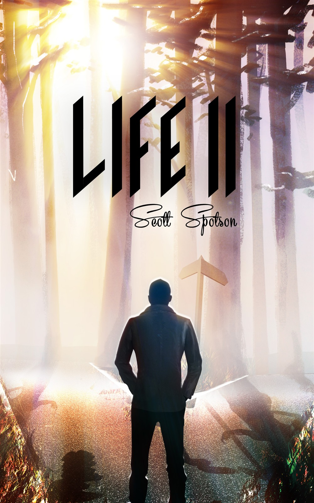

From the journal
Life II - On Book Bub Dec .8 - A Fond Look Back
I'm honoured to say that Life II will be listed on Book Bub on Dec. 8... not once, but twice! It was previously listed December 15, 2013. To this date, of my nine books published under my name, Life II is still, by far. my most popular work.
Life II was written in June, July, and August of 2012. Often, during my young adult years, I had wondered, "What if I did things differently?" Life II is one of the answers. (Unlike Max Thorning, I never studied to be a doctor!)
Here is the listing for Life II:
http://www.amazon.com/Life-II-Scott-Spotson-ebook/dp/B00BJOS4J0
Here's to you, Life II!
If anyone were to ask what are my two favourite books, I would answer Life II and The Four Kings. I do have a soft spot for another two books, though -- Seeking Dr. Magic and Delusional. These are my "fun" books. But I would say that Life II and The Four Kings are the books to which I am most deeply attached.
I don't know why The Four Kings never approached the popularity of Life II! Ah well!
See below for the old covers for Life II. Interesting, eh? Not effective visually, but very true in terms of flashbacks on one's life!

Life II was written in June, July, and August of 2012. Often, during my young adult years, I had wondered, "What if I did things differently?" Life II is one of the answers. (Unlike Max Thorning, I never studied to be a doctor!)
Here is the listing for Life II:
http://www.amazon.com/Life-II-Scott-Spotson-ebook/dp/B00BJOS4J0
Here's to you, Life II!
If anyone were to ask what are my two favourite books, I would answer Life II and The Four Kings. I do have a soft spot for another two books, though -- Seeking Dr. Magic and Delusional. These are my "fun" books. But I would say that Life II and The Four Kings are the books to which I am most deeply attached.
I don't know why The Four Kings never approached the popularity of Life II! Ah well!
See below for the old covers for Life II. Interesting, eh? Not effective visually, but very true in terms of flashbacks on one's life!


